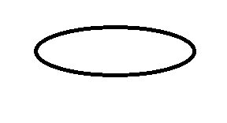
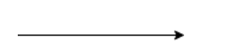
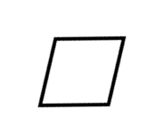
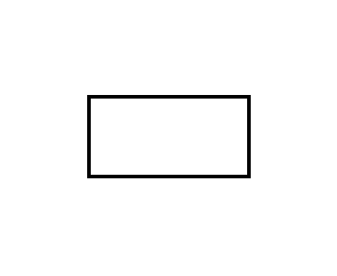
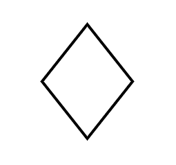
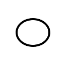
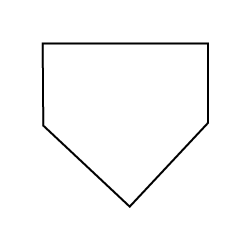
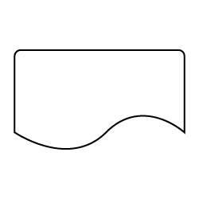
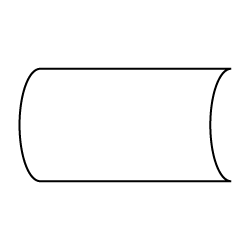
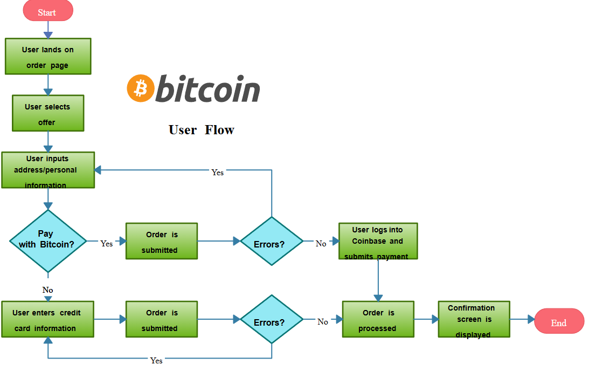

Vooskeemid on algoritmi või protsessi visuaalsed kujutised. Vooskeemid kasutavad algoritmi või protsessi sammude järjestuse selgitamiseks sümboleid/kujundeid, nagu nooled, ristkülikud ja rombid.
Vooskeemi kasutatakse keeruliste protsesside ja algoritmide visualiseerimiseks, et muuta need kõigile osapooltele kergemini mõistetavaks. See on asendamatu tööriist tarkvaraarenduses loogika planeerimisel, ärimaailmas töövoogude dokumenteerimisel ja uute töötajate väljaõppel ning tootmises standardsete tegevusjuhiste kinnistamisel.
Vooskeemide loomiseks kasutatakse erinevat tüüpi kaste. Kõik erinevat tüüpi kastid on omavahel ühendatud noolejoontega. Noolejooni kasutatakse juhtimisvoo kuvamiseks.
| Nimi | Sümbol | Kirjeldus | Kasutusnäide |
|---|---|---|---|
| Terminal/Terminator |  |
See kast on ovaalse kujuga ja seda kasutatakse programmi alguse või lõpu tähistamiseks. | Programmi käivitamine ja lõpetamine |
| Voojoon (Flow arrow) |  |
See noolejoon kujutab algoritmi või protsessi voogu. See esindab protsessi voo suunda. | Kasutatakse iga sümboli ühendamiseks teostusjärjekorras. |
| Data or Input/Output (Andmed või Sisend/Väljund) |  |
See on rööpkülikukujuline kast, mille sisse on kirjutatud sisendid või väljundid. See kujutab põhimõtteliselt süsteemi või algoritmi sisenevat ja süsteemist või algoritmist väljuvat teavet. | Kasutatakse alati, kui süsteemi siseneb või süsteemist väljub teavet . |
| Process (toiming) |  |
See on ristkülikukujuline kast, millesse programmeerija kirjutab algoritmi põhitoimingud või programmi põhiloogika. See on vooskeemi tuum, kuna peamised töötlemiskoodid on kirjutatud sellesse kasti. | Kasutatakse mis tahes üldise sammu jaoks |
| Decision (Otsus) |  |
See on rombikujuline kast, mille sisse on kirjutatud juhtlaused nagu "if", tingimus nagu "a > 0" jne. Sellest on kaks teed, üks on "jah" ja teine on "ei". | Kasutatakse alati, kui tekib jah/ei küsimus või tõene/vale tingimus. |
| On-Page Connector/Reference (Leheküljevaheline viide) |  |
See ringikujuline joonis kujutab vooskeem jätkuvat järgmiste sammudega. See joonis tuleb kasutusele siis, kui ruumi on vähe ja vooskeem on pikk. Selle ringi sees on iga numbriline sümbol ja sama numbriline sümbol kuvatakse enne jätku, et kasutaja saaks jätkust aru. | Kasutatakse keerulises diagrammis segaste ristuvate joonte vältimiseks. |
| Off-Page Connector/Reference (Leheküljevaheline viide) |  |
Ühendab vooskeemi jätkuga teisel lehel. | Kasutatakse siis, kui vooskeem on nii suur, et see ulatub mitmele lehele. |
| Document (Dokument) |  |
Esindab protsessis loodud või kasutatud füüsilist dokumenti või aruannet. | Kasutatakse juhul, kui protsess hõlmab dokumendi (paberkandjal või elektroonilise) loomist või sellele viitamist. |
| Stored Data (Salvestatud andmed) |  |
Tähistab failis või andmebaasis (salvestuskohas) talletatud andmeid. | Kasutatakse alati, kui teavet salvestatakse või sealt andmebaasist või failist hangitakse. |
